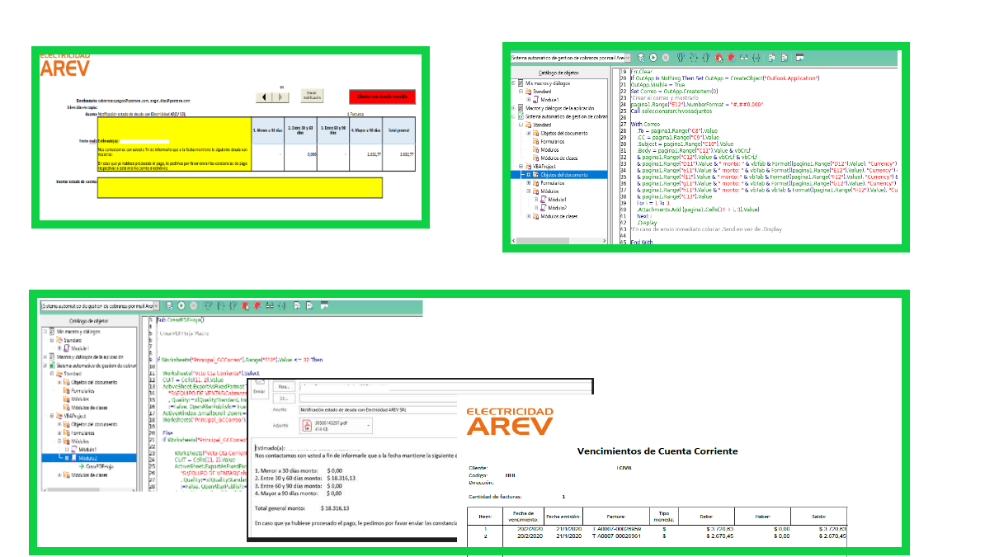
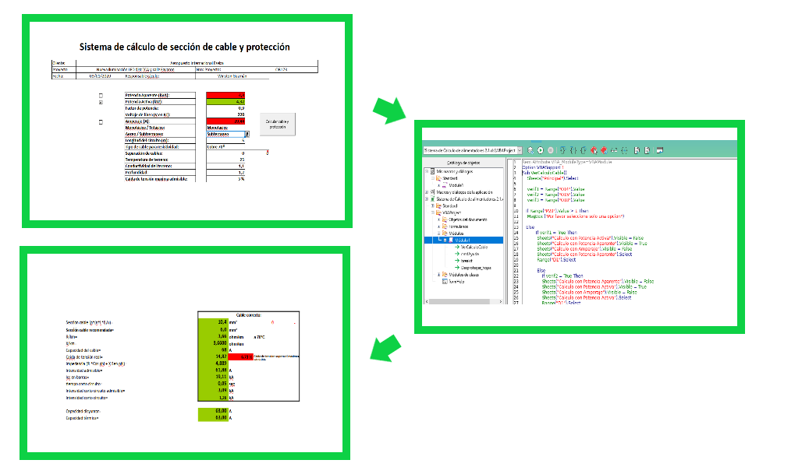

Proyectos:
-
Nombre proyecto: Correos de avisos de pedidos pendientes
Descripción: Generador de correos automaticos al personal de la empresa de pedidos de clientes pendientes a la fecha. Esto fue desarrollado en AppScript.

-
Nombre proyecto: Correos de avisos de deuda cliente
Descripción: Generador de correos con el estado de cuenta en PDF, proyecto desarrollado en VBA / Excel.
 -
Nombre proyecto: Sistema de calculo de Acometida y Proteccion Eléctrica
Descripción: Sistema de calculo de diametro de cable electrico, protección termica y disyuntor, proyecto desarrollado en VBA / Excel.
